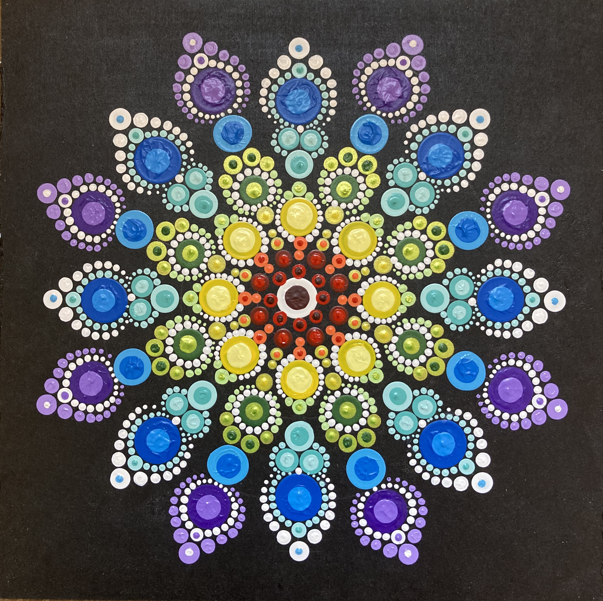

ACRÍLICO SOBRE TELA Y MADERA
Naif y Mandalas

Abanico de la vida
Acrílico sobre tela, 60x70cm.
Mi inspiración fue este maravillso planeta y el universo.

Mandala Chakras
Acrílico sobre madera, 20x20cm.
Los colores de los chakras en una flor.

Corazón sagrado
Acrílico sobre tela, 40x100cm.
Los chakras, la for de la vida y un corazón para mi sobrina Belén.